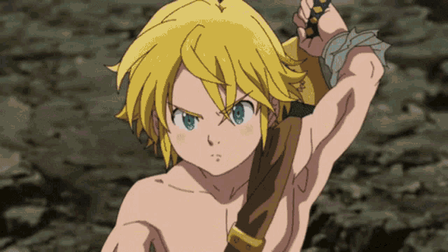
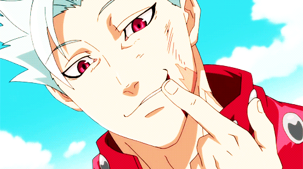
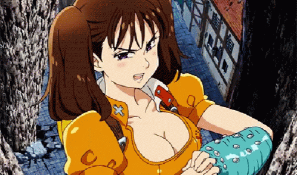
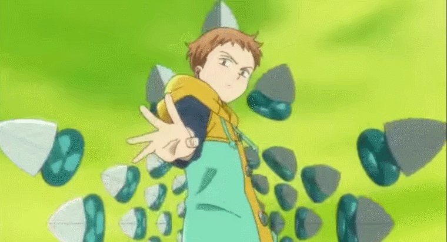
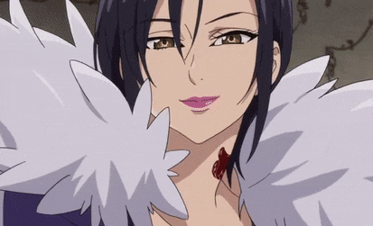
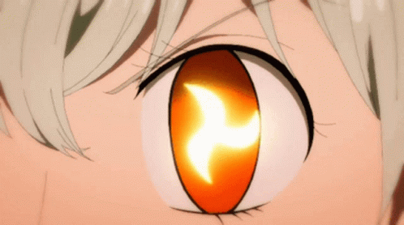
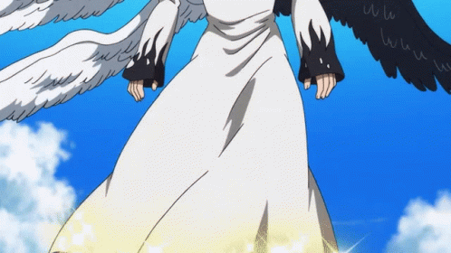

-
Meliodas #001
- Demônio
Meliodas é o capitão dos Sete Pecados Capitais e o seu principal pecado é a Ira do Dragão. .
-
Ban #002
- Humano
Ban conhecido como o Pecado da Ganância da Raposa. Após o grupo se separar, Ban foi preso pelo grupo Presas Tortuosas na Prisão de Baste, mas escapou quando soube que Meliodas estava vivo à sua procura. Além de ser imortal, ele é conhecido por sua habilidade, Snatch..
-
Diane #003
- Gigante
Diane é o pecado capital da inveja da Serpente. Faz parte do clã de gigantes, possui um enorme poder físico e uma conexão profunda com a terra.
-
King #004
- Fada
King seu nome verdadeiro é Rei das Fadas Harlequin, ele protege a Floresta do Rei das Fadas e o resto do Reino das Fadas.
-
Escanor #005

- Humano
Escanor sua força e personalidade variam de acordo com a hora do dia, com o seu poder sendo imenso e sua personalidade arrogante durante o dia, mas se tornando frágil e submisso a noite.
-
Charizard #006

- Boneco
Gowther é incapaz de ter sentimentos ou emoções, além de não entender muito sobre interações sociais, mas faz o seu melhor para tentar entendê-las, passando muito de seu tempo com leituras.
-
Merlin #007
- Indefinido
Merlin o pecado capital da Gula do Javali. Aparenta ter um caráter lúdico. Ela gosta de zombar e de desafiar os outros e se mostra bastante sábia em suas palavras.
-
Elizabeth #008
- Deusa
Elizabeth é uma dos membros mais bem classificados do Clã das Deusas e filha da Suprema Divindade. Ela também é a encarnação original de Elizabeth Liones, bem como amante de Meliodas 3.000 anos atrás.
-
Hawk #009

- Animal
Hawk é um porco falante e companheiro de Meliodas. Ele não trabalha no Chapéu de Javali limpando os restos de comida que as cervejas deixam na taberna. Possui muita autoestima e autodenomina-se Capitão das Sobras.
-
Mael #010
- Arcanjo
Mael é um dos Quatro Arcanjos do Clã das Deusas. Durante a Guerra Santa 3.000 anos atrás, uma certa pessoa mudou Mael e as memórias de todos os outros, dando ao Arcanjo uma nova identidade como um membro dos Dez Mandamentos e o segundo filho do Rei Demônio, sob o nome de Estarossa